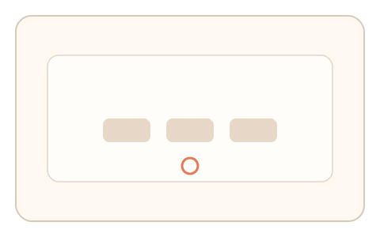

#163
Reverse Brainstorming - Round 2
已扩展
时钟标记现场感
将系统时钟抖动嵌入节奏提示，要求短窗口响应并评估节律序列。
概念原文
将系统时钟抖动或随机节奏嵌入任务，引导用户在短窗口响应，判定基于节律序列与异常检测。
把“现场时间锚”作为不可预测因素，降低环境伪造可行性。
研究背景
时钟抖动与系统节拍具有微随机性，真实用户在短窗口响应中会表现出稳定的相位滞后与修正轨迹。将“现场时间锚”作为不可预测因素可抬高伪造成本。
核心机制
- 生成带抖动的节奏提示或时间窗。
- 用户在短窗口内进行响应。
- 记录相位偏差与节律序列。
- 与人类基线分布进行比较。
用户流程
- 步骤 1：用户看到随机节奏提示。
- 步骤 2：在短时间窗内点击或操作。
- 步骤 3：系统分析节律序列与偏差。
判定信号
相位滞后与修正曲线
人类对节拍响应存在稳定滞后与校准。
节律间隔抖动
真实跟随会产生可解释的抖动结构。
判定逻辑
相位偏差与抖动需落在人类区间；过度精准或完全随机判异常。
对抗面
- 脚本读取时间窗并精确触发
- 回放记录的节律序列
防御与缓解
- 随机化抖动分布与相位
- 缩短响应窗口并加入干扰节拍
- 结合反应时与轨迹信号
可达性与风险
提供更慢节奏与视觉提示，避免听觉依赖。
- 设备计时精度差异影响判定
- 网络延迟影响短窗口响应
可视化状态

状态 1：节奏提示
带抖动的节奏序列。

状态 2：短窗响应
用户在短窗口内操作。

状态 3：节律判定
分析相位偏差与抖动。
参考资料
Jitter
说明时间抖动与随机性。
Reaction time
说明短窗口响应与反应时分布。